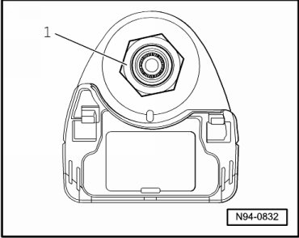
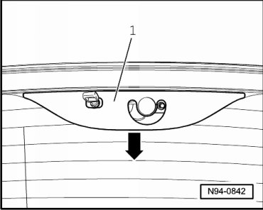
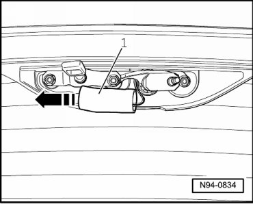
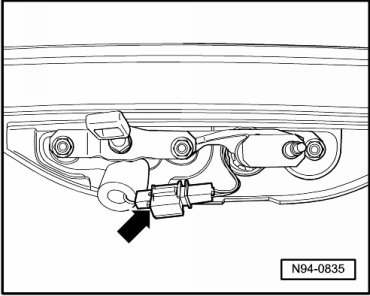
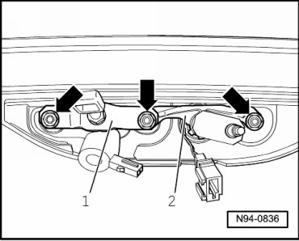

Rear Window Opening Button
Rear Window Opener
Rear Window Opening Button
Special tools, testers and auxiliary items required
• Torque Wrench (V.A.G 1331/)
Removing
- Remove wiper arm --> [ Rear Window Wiper Arm ] Rear Window Wiper Arm.
- Remove hex nut - 1 -.

- Open rear window, rear window emergency release --> [ Rear Window Emergency Release ]. Rear Window Emergency Release
- Release cap - 1 - in - direction of arrow - from locking devices and remove it.

- Slide insulation - 1 - to the side in - direction of arrow - and thus expose the harness connector.

- Disconnect electrical connection - arrow -.

- Remove nuts - arrows -.

- Remove lock bracket - 1 - and wiper shaft with crank - 2 -.